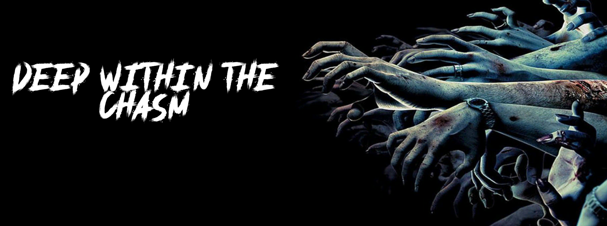
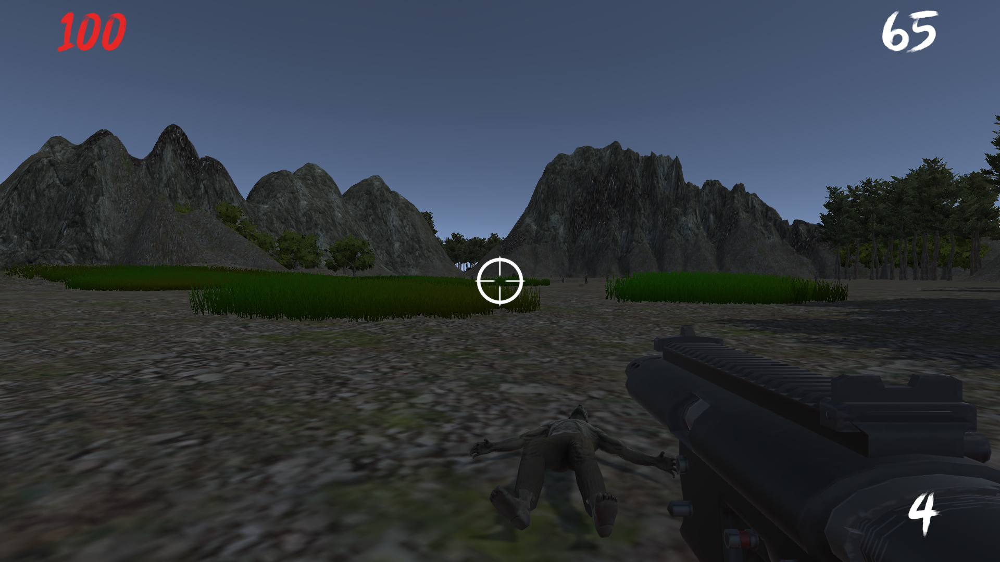

Level Design • Unity Development • Audio Design • Combat Design
Deep Within the Chasm
A simple zombie shooter submitted for the GameDev.tv 2020 Game Jam (Theme: Time). The Player must cross the Chasm and survive zombies in the area, reaching the end of the level before time runs out.
Level Design
Unity Development
Audio Design
Combat Design
Context
- Jam constraints: 48h build, theme-driven ("Time"), minimal assets.
- Solely responsible for project development from start to finish.
Goals
- Challenge myself into creating a playable prototype in time for submission.
- Meet the requirements of the theme and keep project in scope.
Approach
- Establish a gameplay slice where the player must reach the end before time runs out.
- Zombies are in the way and player gets points for kills.
- Kills and time left contribute to final high score.
- Simple UX and no clutter to keep things simple.
Responsibilities
- Produce full code base.
- Create sandbox and design requirements.
- Simple sound design and audio editing in Audacity.
- QA and bug identification/fixing.
System Designs
Combat and Ammunition
- Player has access to a single weapon.
- Limited ammunition to heighten tension.
Difficulties encountered
- Requires much more polish.
- Feedback delays need to be addressed.
- Code base needs to be improved in order to cater for expansions.
- Could use a lot of modernisation in newer Unity Engine.
Gallery


Outcome
- Submitted a complete vertical slice with start–finish arc within jam time.
- Easy to play and jump into.
- Requires more interesting mechanics and pulls.
Built during Gamedev.tv Game Jam 2020. Contributed as the Solo Developer.